Phase0 — ảnh NGUỒN, chưa import/runtime/duyệt Không phải screenshot game. Không cắt/sửa nguồn. Bốn NPC chờ duyệt identity/tuổi; Curator/Inscription cần đối chiếu mặt. Sáu sheet mới chưa meta; Seoul không tự map bốn hình thành bốn milestone.
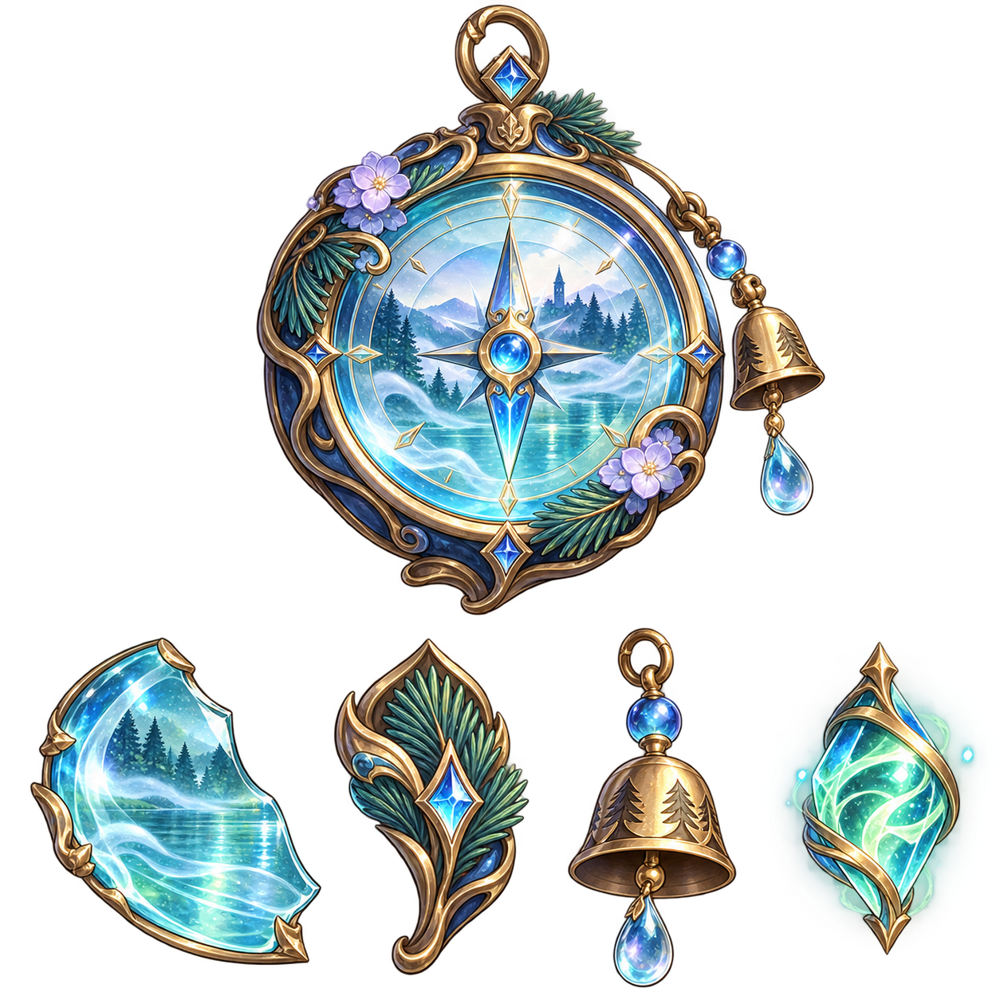
Artifact_DaLat_MistCompass_Source.png 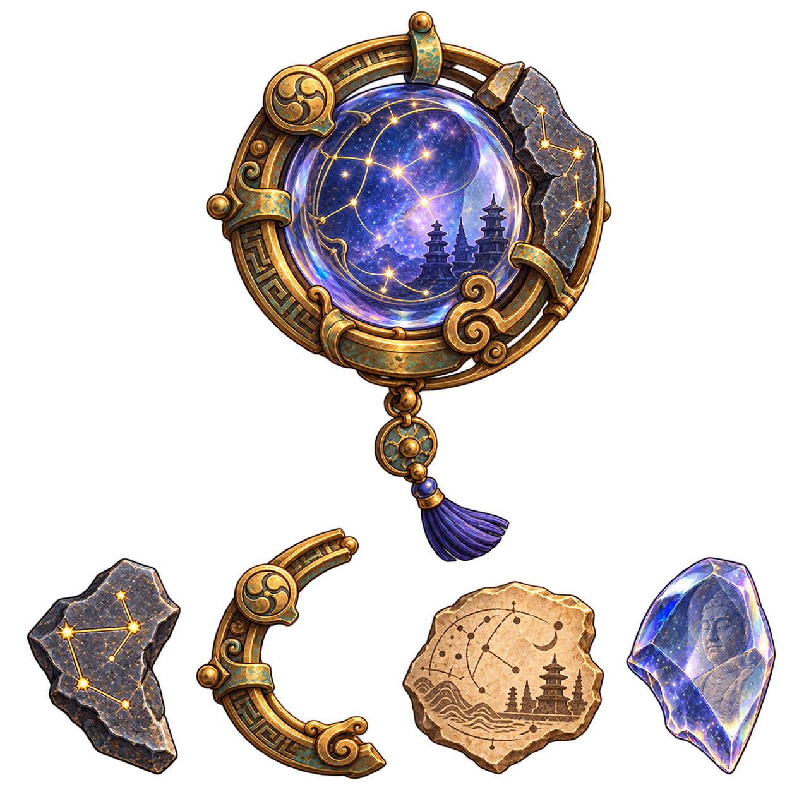
Artifact_Gyeongju_StarlightLens_Source.png 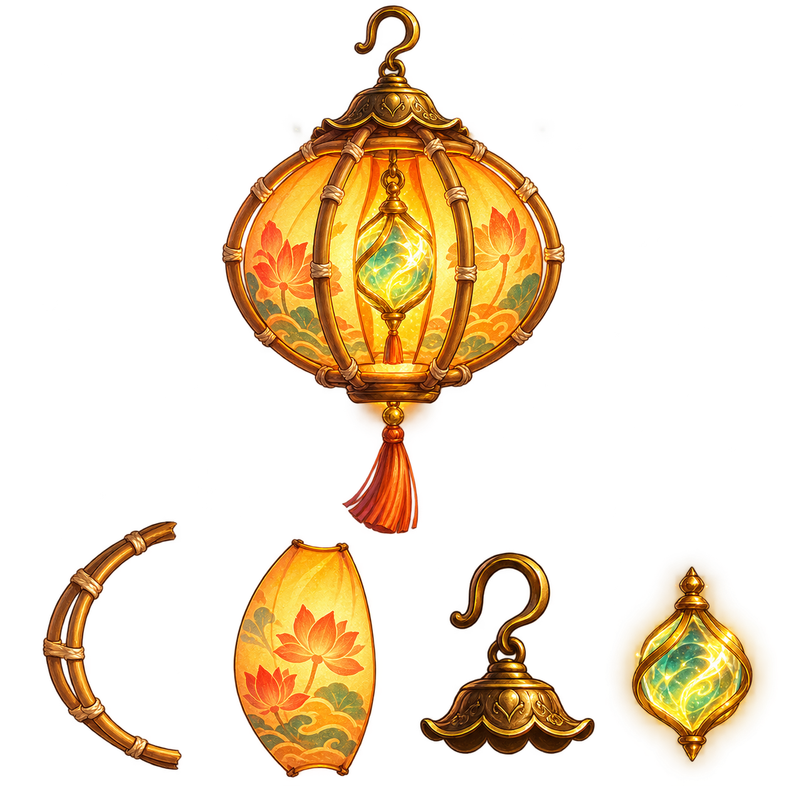
Artifact_HoiAn_Lantern_Source.png 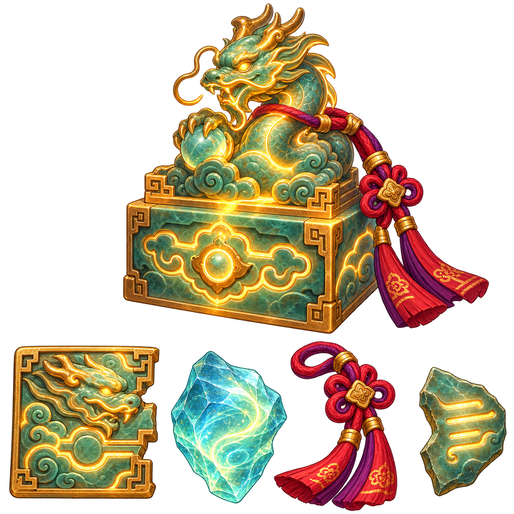
Artifact_Hue_DragonSeal_Source.png 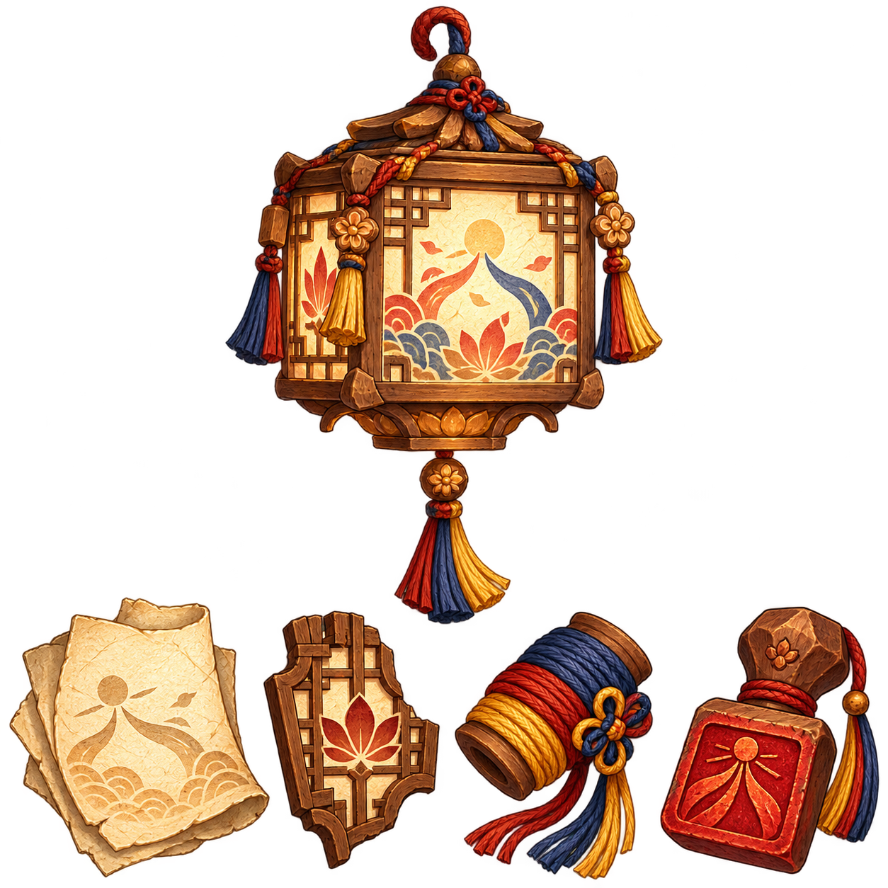
Artifact_Jeonju_HanjiSeal_Source.png 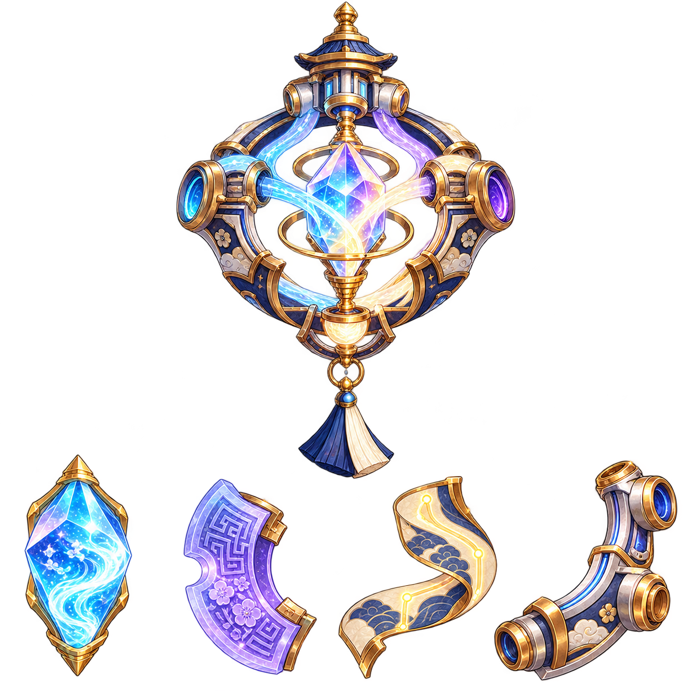
Artifact_Seoul_ThreeRelayPrism_Source.png 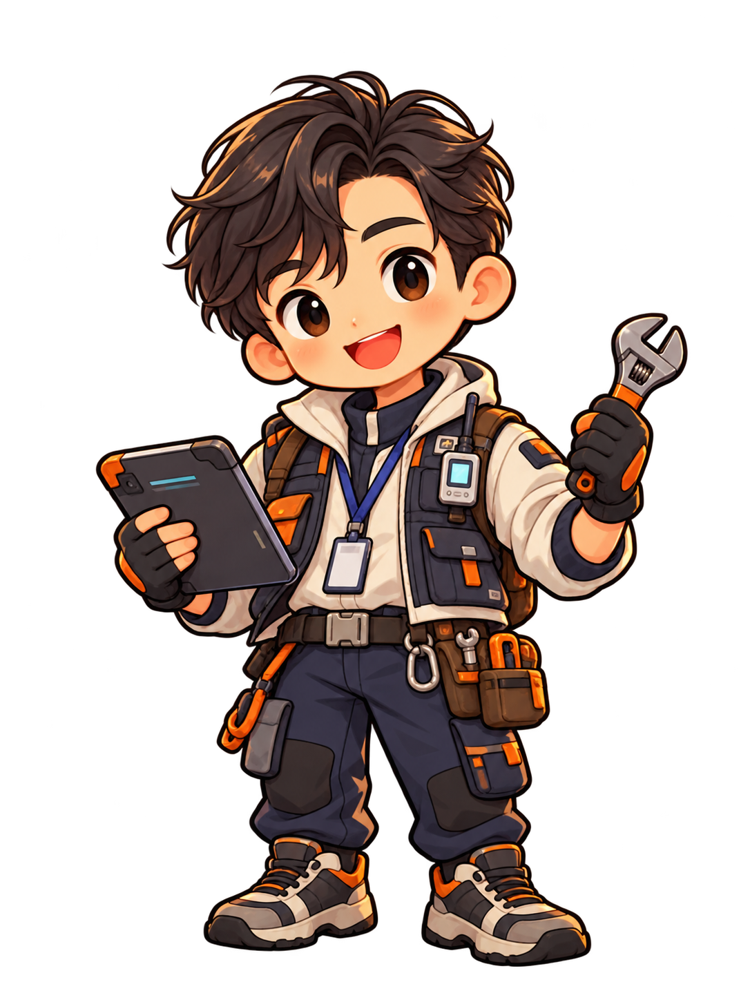
NPC_Seoul_Engineer.png 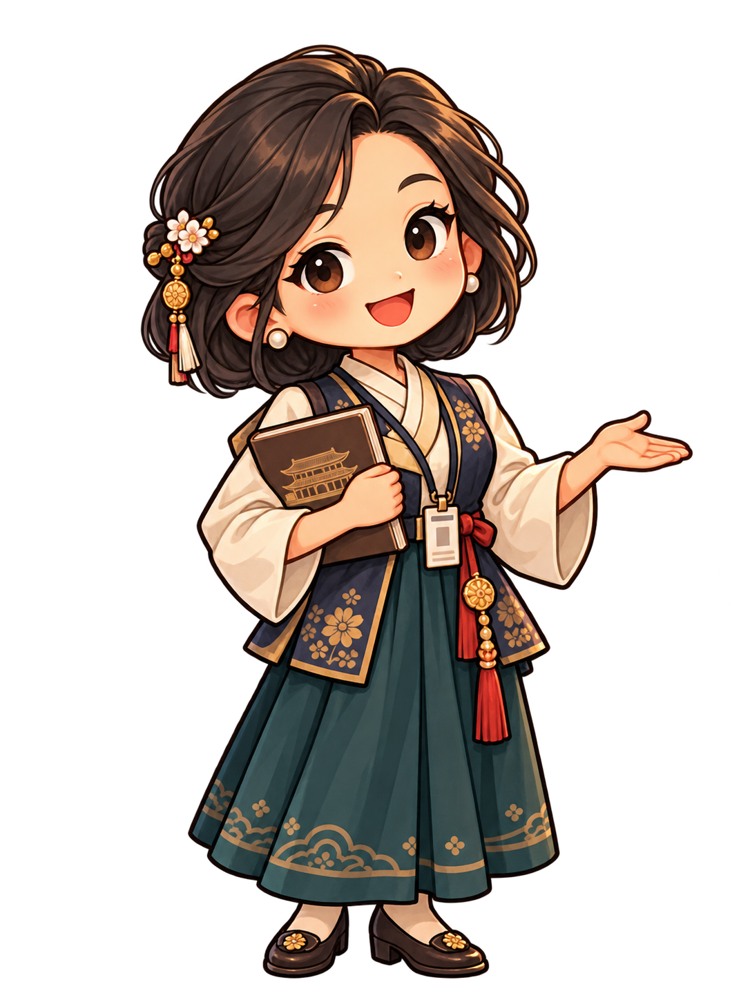
NPC_Seoul_Curator.png 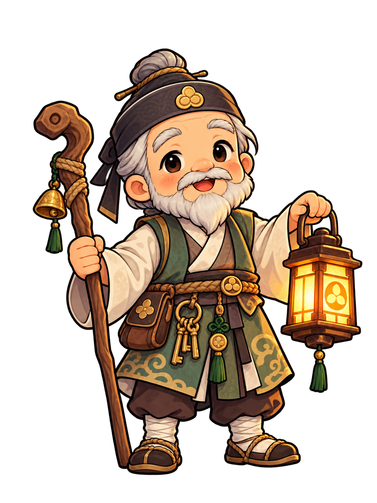
NPC_Gyeongju_Keeper.png 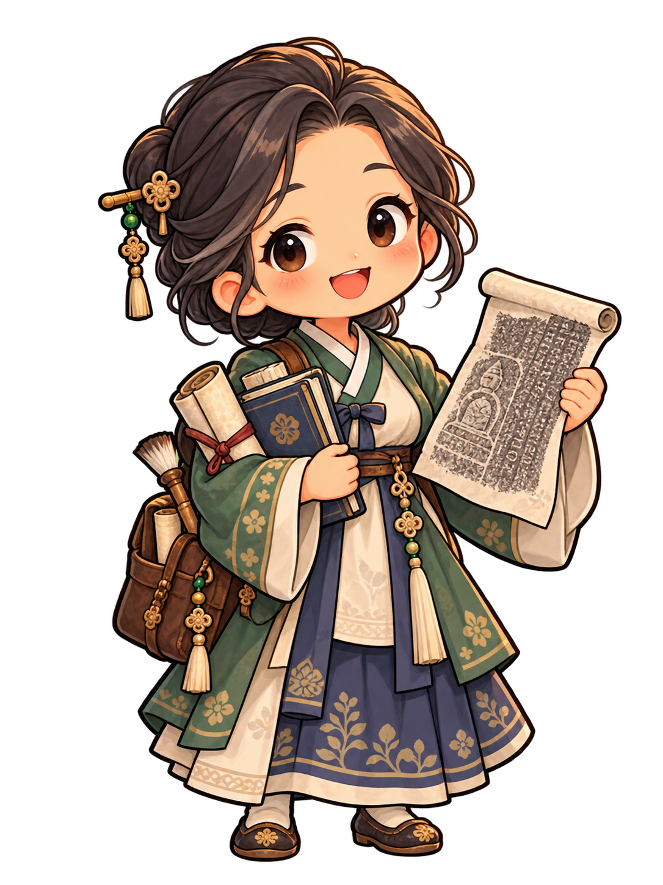
NPC_Gyeongju_Inscription.png Atlas tham chiếu — nhiều hình đã có identity, không được reuse tự do 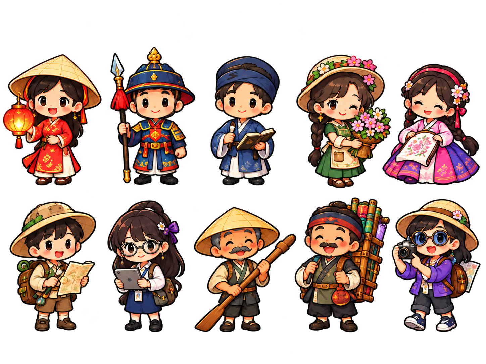
Assets/_Game/Art/Characters/NPC/Shared/NPC_TransparentAtlas.png 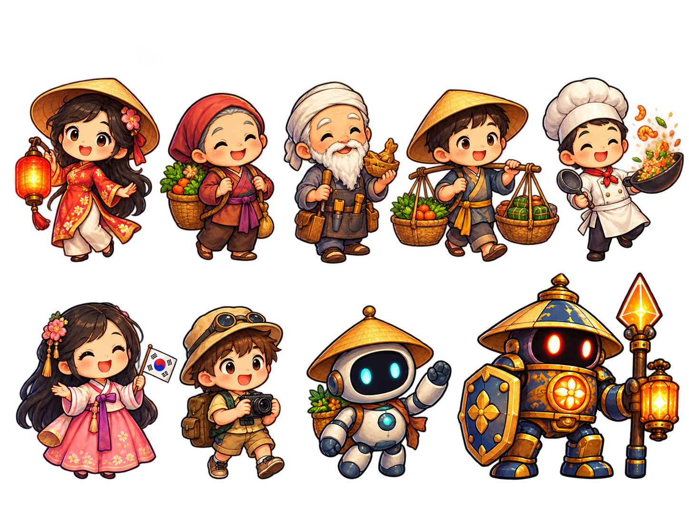
Assets/_Game/Art/_SourceSheets/H3_Upgrade_20261016/H3_07_Characters_NPC_Concept.png